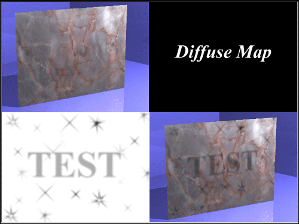

Objects in real-life are rarely exactly the same color all over. Things age
and get scuffed up, leaving the color approximately the same but with obvious
blemishes. An easy way to add this kind of real world, used appearance is with a
Diffuse map. Diffuse maps are greyscale images. As colors get darker on the
Diffuse map, the underlying color of the object gets darker. Completely white
areas of the Diffuse map have no affect on the object, while completely black
areas of the map make the underlying color completely black. A good looking
scuff” mark would be varying shades of gray.
The value determines how much effect the grayscale image has on the surface.
A higher number would blemish the surface color more. Reasonable values for
Diffuse maps are from 1 to 1000%.


Related Topics:
Color Maps
Transparency Maps
Bump Map
Specularity Map
Reflectivity Maps
Ambiance Maps
Cookiecut Maps
Displacement and Fractal Maps